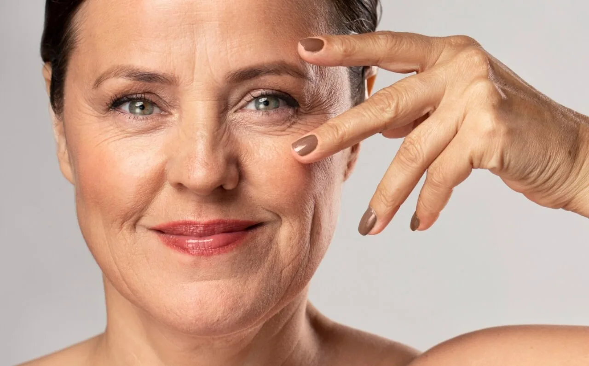
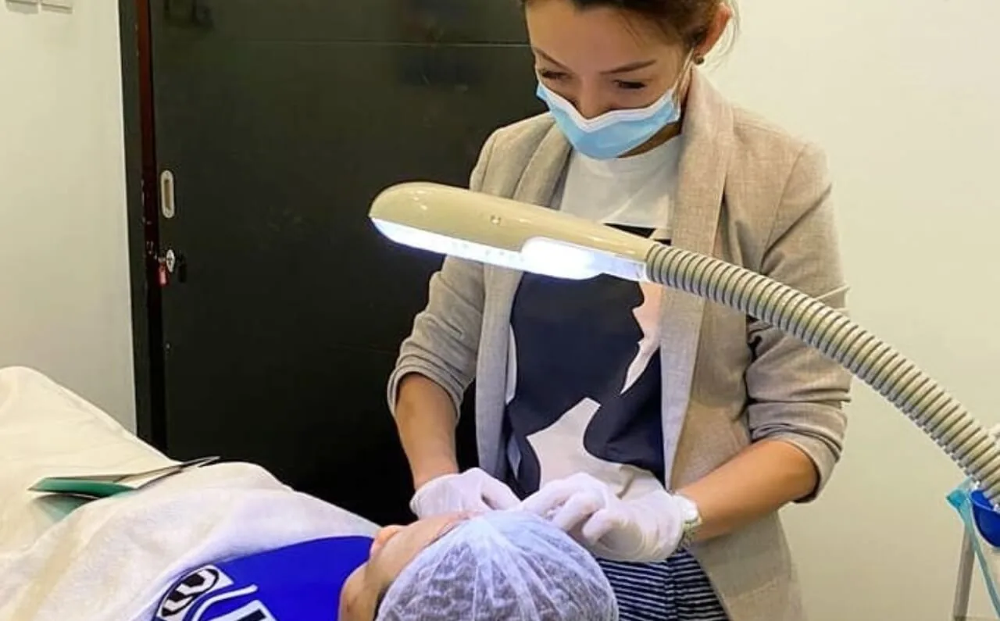

In a world that often celebrates perfection, it’s natural to desire flawless skin that radiates health and vitality. We all have those little imperfections—pigmentation irregularities, unwanted tattoos, acne scars, fine lines, stubborn hair—that sometimes get in the way of feeling our absolute best.
This is where the magic of Pico Lasers comes into play, offering a versatile and precise approach to tackle a range of concerns that can affect our self-esteem.

Pico Laser is versatile and capable of treating multiple concerns such as unwanted pigmentation, stubborn tattoos, acne scars, and fine lines.
Understanding Pico Laser Technology
Pico lasers are a breakthrough in the world of aesthetic treatments, harnessing the power of advanced light technology to address a multitude of skin imperfections. Unlike traditional lasers, Pico Lasers deliver ultra-short pulses of energy in picoseconds—trillionths of a second—resulting in enhanced precision and reduced heat transfer to the surrounding skin. This means more efficient treatments, minimal discomfort, and often shorter recovery times.
This technology’s versatility shines through as it’s capable of treating a wide spectrum of concerns, from unwanted pigmentation to stubborn tattoos, and from acne scars to fine lines. But how does it all work? Imagine a skilled artist delicately refining a canvas, stroke by stroke. Pico Lasers function similarly, working on the microscopic level to break down pigments, stimulate collagen production, and encourage the skin’s natural healing process.
Over the course of this article, we’ll explore the realms of imperfections that pico lasers can help diminish, unveiling a smoother, more radiant version of you. From unwanted tattoos to age spots, from acne scars to stubborn hair, the possibilities are truly exciting.
Whether it’s sunspots, age spots, or the aftermath of hormonal changes, unwanted pigmentations can be diminished with Pico Laser!
Fading Away: Treating Unwanted Pigmentation
The allure of flawless skin often clashes with the reality of pigmentation irregularities—those unwelcome spots and patches that can mar our complexion. Whether it’s sunspots, age spots, or the aftermath of hormonal changes, unwanted pigmentation can be a source of frustration. This is where the remarkable capabilities of pico laser technology come into play, offering a path toward achieving a more even-toned and radiant complexion.
How Pico Lasers Target and Break Down Pigmented Lesions
Pigmented lesions occur due to an overproduction of melanin—the pigment responsible for our skin, hair, and eye color. Pico lasers work their magic by emitting ultra-short pulses of energy that target the melanin within these lesions.
The energy is absorbed, causing the pigment to shatter into tiny particles. These fragmented particles are then naturally eliminated by the body’s immune system, gradually fading the appearance of the pigmented area.
Addressing Hyperpigmentation, Age Spots, and Sun Damage
Hyperpigmentation, age spots, and sun damage are all common forms of unwanted pigmentation that can affect anyone, regardless of skin type or age. Hyperpigmentation often stems from hormonal changes, such as during pregnancy or from certain medications. Age spots, on the other hand, tend to be the result of cumulative sun exposure over the years.
Pico Lasers excel in treating these concerns precisely because of their ability to target pigmented areas without affecting the surrounding healthy skin. The result is a gradual fading of the spots, revealing a more even complexion beneath.
While tattoos can be permanent, Pico Laser can help diminish any mistakes or unwanted tattoos.
Bidding Farewell to Tattoo Regrets
Tattoos are often a canvas for self-expression, but as life evolves, so do our tastes and priorities. What was once a symbol of identity might now be a reminder of a different phase in life. The good news is that pico laser technology presents a remarkable solution for those looking to bid farewell to tattoo regrets.
How Pico Lasers Efficiently Fragment Tattoo Ink Particles
Tattoo ink is designed to be permanent, residing in the deeper layers of the skin. This is where pico lasers shine. By delivering ultra-short pulses of energy, pico lasers generate a powerful shockwave that effectively breaks down tattoo ink particles into smaller fragments. These tiny fragments are then gradually eliminated by the body’s immune system over time.
Treating Multi-Colored Tattoos with Pico Laser Technology
Tattoos come in an array of colors, each requiring specific wavelengths of light to effectively break down the corresponding ink. Pico lasers excel in treating multi-colored tattoos due to their versatility. They can be calibrated to emit different wavelengths, ensuring that each color is targeted with precision.
Importance of Multiple Sessions and Aftercare in Tattoo Removal
Tattoo removal with pico lasers is a process that requires patience and commitment. Multiple sessions are typically needed to achieve significant fading or complete removal, depending on factors such as the size and complexity of the tattoo. The body’s ability to naturally eliminate the fragmented ink particles is a gradual process, and spacing out sessions allows for proper healing.
Acne scars can affect our self-esteem and can be difficult to erase but with Pico Laser, it’s very possible!
Rejuvenating Your Canvas: Acne Scar Reduction
Acne, a common rite of passage in our youth, can sometimes leave behind unwelcome reminders in the form of acne scars. These scars, whether pitted, raised or hyperpigmented, can affect our confidence and self-esteem.
The good news is that pico laser technology offers a beacon of hope for those seeking to rejuvenate their skin and diminish the appearance of acne scars.
Pico Lasers’ Role in Stimulating Collagen Production for Scar Healing
At the heart of pico laser’s effectiveness in scar reduction lies its ability to stimulate collagen production. Collagen, the skin’s natural support structure, is essential for maintaining skin firmness and texture.
Pico lasers deliver ultra-short bursts of energy that create controlled micro-injuries in the skin. As the skin heals, collagen production is triggered, leading to a gradual improvement in scar appearance.
Treating Various Types of Acne Scars with Pico Laser Technology
Acne scars come in different forms, each requiring a tailored approach. Pico lasers are particularly versatile in treating both atrophic (pitted) and hypertrophic (raised) scars.
For atrophic scars, the laser’s energy encourages collagen production, helping to elevate the depressed areas. For hypertrophic scars, laser energy can help soften and flatten the raised tissue.
Combining Pico Laser with Other Treatments for Optimal Results
While pico lasers offer impressive scar reduction on their own, combining them with other treatments can amplify the results.
For instance, micro-needling—a procedure that creates controlled micro-injuries with tiny needles—can synergize with pico laser treatments by further promoting collagen production. Your licensed aesthetician will customize a treatment plan that best addresses your specific scar type and skin condition.

We cannot stop the natural cycle of aging but with Pico Laser the looks of wrinkles and fine lines can be greatly reduced.
Erasing the Past: Wrinkle and Fine Line Reduction
As the years go by, our skin accumulates the imprints of our experiences and emotions in the form of wrinkles and fine lines. While these signs of aging are a natural part of life, they don’t have to define how we feel about ourselves.
Pico laser technology offers an effective and innovative approach to reducing the appearance of wrinkles and fine lines, allowing us to embrace the present while erasing the past.
How Pico Lasers Can Stimulate Skin Renewal and Collagen Remodeling
Collagen, the protein responsible for skin’s firmness and elasticity, gradually diminishes with age. Pico lasers play a role in reversing this process by delivering ultra-short pulses of energy that stimulate skin renewal and collagen remodeling.
This controlled damage prompts the skin to heal itself, leading to improved texture, smoother tone, and reduced wrinkles.
Targeting Dynamic Wrinkles and Static Lines with Pico Laser Treatments
Wrinkles fall into two main categories: dynamic wrinkles caused by facial muscle movements (like crow’s feet and frown lines), and static lines caused by loss of collagen and sun exposure.
Pico lasers address both types by promoting collagen production and targeting pigmented areas. The result is a softening and smoothing effect that can restore a more youthful appearance.
The Gradual Improvement and Longevity of Wrinkle Reduction
It’s important to note that while pico laser treatments yield impressive results, they are not instantaneous. The process requires patience as the skin gradually improves over several weeks after each session.
Multiple sessions are usually recommended to achieve optimal outcomes. The longevity of the results varies, but maintenance sessions can help sustain the rejuvenated appearance.
Texture is normal for our skin but Pico Laser can improve any of those pesky issues to reveal smoother skin underneath.
The Delicate Touch: Pico Laser for Skin Texture Refinement
Smooth, radiant skin is the canvas upon which confidence blossoms. However, life’s experiences, environmental factors, and the natural aging process can leave our skin with a texture that’s less than ideal.
Enter pico laser technology—a sophisticated solution that offers a delicate touch to refine skin texture, enhance tone, and elevate your skin’s natural radiance.
How Pico Lasers Improve Skin Texture, Tone, and Overall Appearance
Pico lasers excel not only in targeting specific imperfections but also in enhancing overall skin texture and appearance.
By delivering ultra-short pulses of energy, these lasers trigger a process known as photomechanical conversion. This process gently stimulates the skin, promoting collagen production and triggering the body’s natural healing response.
The result is a rejuvenated complexion with improved texture, reduced pore size, and an overall refined appearance.
Treating Rough Texture, Enlarged Pores, and Uneven Skin Tone
If you’ve struggled with rough or uneven skin texture, enlarged pores, or an irregular skin tone, pico lasers can be a transformative ally. These lasers work on the microscopic level, gently exfoliating the outermost layer of skin while stimulating collagen in the deeper layers.
This dual approach results in smoother skin texture, minimized pore appearance, and a more even skin tone.

Be sure to follow any post-treatment instructions from your aesthetician to ensure your skin recovers quickly.
Safety and Recovery
When it comes to aesthetic treatments, safety, and recovery are paramount. The prospect of undergoing any procedure can evoke a range of emotions, from excitement to apprehension.
Rest assured, pico laser treatments are designed with your comfort and well-being in mind, offering a balance between effective results and minimal downtime.
Minimal Downtime and Discomfort Associated with Pico Laser Treatments
One of the remarkable features of Pico laser technology is its ability to provide impressive results with minimal disruption to your daily life.
The ultra-short pulses of energy are finely tuned to target specific concerns without causing excessive heat to the surrounding skin. This precision translates to a more comfortable experience during the procedure and significantly reduced downtime afterward.
Importance of Post-Treatment Care and Sun Protection
While pico laser treatments are gentle, proper aftercare is essential to support the healing process and ensure optimal results.
Your licensed aesthetician will provide guidance on post-treatment care, which may include using gentle skin care products, avoiding excessive sun exposure, and staying hydrated. Sun protection is of particular importance, as treated skin can be more sensitive to UV rays.
Consultation and Skin Assessment for Safe and Effective Treatment
A thorough consultation with a licensed professional is the foundation of a safe and effective pico laser treatment journey.
During this consultation, your aesthetician will evaluate your skin type, specific concerns, and medical history. This information allows them to tailor the treatment parameters to your unique needs, minimizing any potential risks and maximizing the benefits.
If you’re intrigued by the possibilities that pico laser technology presents, I encourage you to take the next step and consult with a licensed aesthetician.
We will guide you through the process, evaluate your unique skin concerns, and create a personalized treatment plan that aligns with your goals. Remember, the journey towards embracing your beauty is not only about enhancing your physical appearance but also about nurturing your self-esteem and well-being.
Contact us now to book a consultation!
Categories
Related treatments